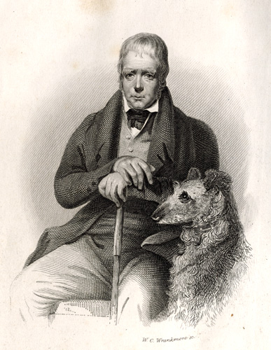

<< Back

From: Sir Walter Scott, Waverley; or, 'Tis Sixty Years Since (Leipzig: Bernhard Tauchnitz, 1845) (front.)
Wrankmore's engraving of the 1830 painting by Sir John Watson Gordon omits the background view of the Eildon Hills.